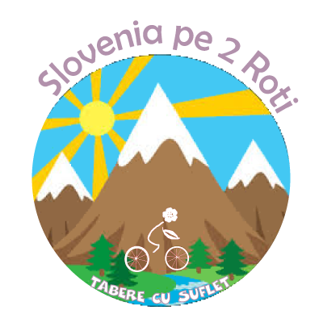

/ Tabere Vara / Slovenia pe 2 Roti
/ Tabere Vara / Slovenia pe 2 Roti

"Slovenia este un urias Parc Natural scaldat de soarele bland al Mediteranei, in care maiestosii Alpii isi dau mana cu Adriatica cea albastra!"
Cand mergem? 25 august - 1 septembrie 2018
Unde? Predil, Bovec, Soka, Postojna, Izola, Portoroz. Cazarea se face la Pensiuni si Camping
Ce facem? Coboram cu bicicleta de la munte la mare si vedem o multime de locuri interesante! Vom pedala zilnic cate 30 - 50 km, cu putin urcari si multe coborari. Se ruleaza pe asfalt, drumuri pietruite sau alei de biciclete. Si pentru ca nimic sa nu ne strice bucuria, bagajele vor veni cu masina de asistenta, iar transportul se face cu avionul.
Ce vedem? De-a lungul celor 6 zile vom pedala in una dintre cele mai frumoase zone din Alpii Julieni, printre piscurile albite ale uriasilor Triglav si Mangart si vom vedea o multime de monumente naturale sau facute de mana omului! Vom vizita Pestera Postojna si Cetatea de Calcar - "Perla Carstului European" cum i se mai spune, Soka - cunoscut ca Raul de Smarald datorita frumusetii sale, cetati si fortarete din vremea habsburgilor, urmele unui drum roman si un site arheologic din acea perioada, iar la final vom ajunge pe litoralul Dalmat al Marii Adriatice si ne vom balaci intr-un golf cu apa de cristal:)
Vezi Detalii traseu
Varsta recomandata: 8 - 18 ani.
Cat costa? Contributia pentru aceasta tabara este de 850 Euro, inclusiv biletul de avion si transportul bicicletei. Pretul fara transport inclus este 550 Euro.
Ce asiguram? Avion Bucuresti - Liubliana sau Klagenfurt, ghidaj, masina asistenta, transport biciclete + bagaje, cazare cu mic dejun 7 zile
Cum rezerv? Rezervarea devine ferma dupa plata unui avans de 50% lei.
Termenul pentru plata avansului este cu 90 zile inainte de inceperea taberei, iar plata se poate face cash sau in Contul Asociatiei.
In cazul in care se depaseste termenul de plata, exista posibilitatea ca pretul sa creasca datorita biletului de avion.
La detalii plata va rugam sa treceti "Contract Sponsorizare", iar dupa ce faceti plata, va rugam sa ne confirmati printr-un simplu email.
Contractul se gaseste aici. Pentru validarea inscrierii, va rugam sa il completati si sa ni-l transmiteti.
Asociatia Tabere cu Suflet: Aceasta tabara este deschisa exclusiv pentru membrii Asociatiei Tabere cu Suflet.
Daca nu sunteti membru si doriti sa deveniti, va rugam sa consultati Conditiile de Aderare, apoi sa completati Formularul de Inscriere si sa semnati Cererea de Adeziune.
WeCare: Prin achitarea integrala a contributiei, puteti ajuta un copil fara posibilitati materiale sa vina gratuit in tabere, 10% din costul total al taberei fiind directionat catre programul WeCare Zambet pentru toti Copiii. Mai multe detalii